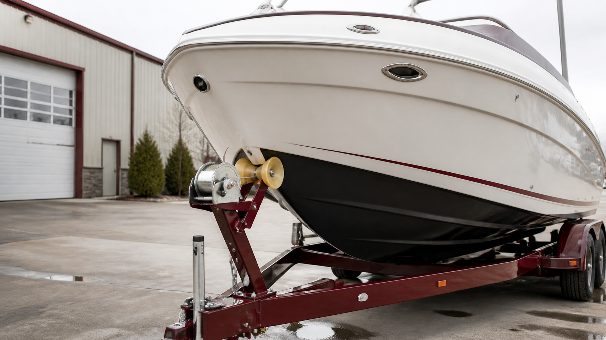
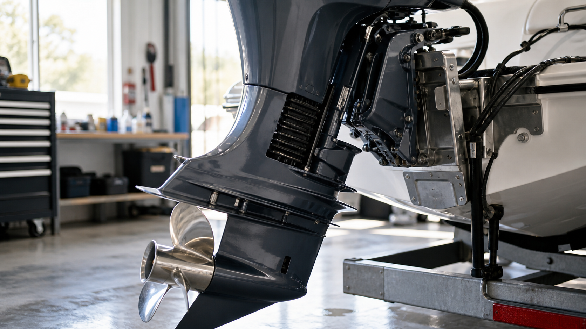
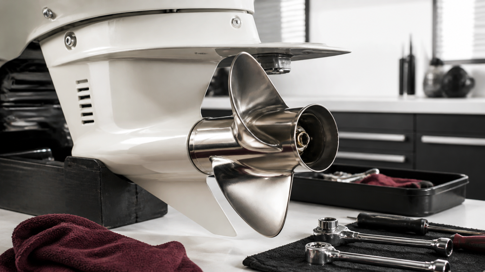
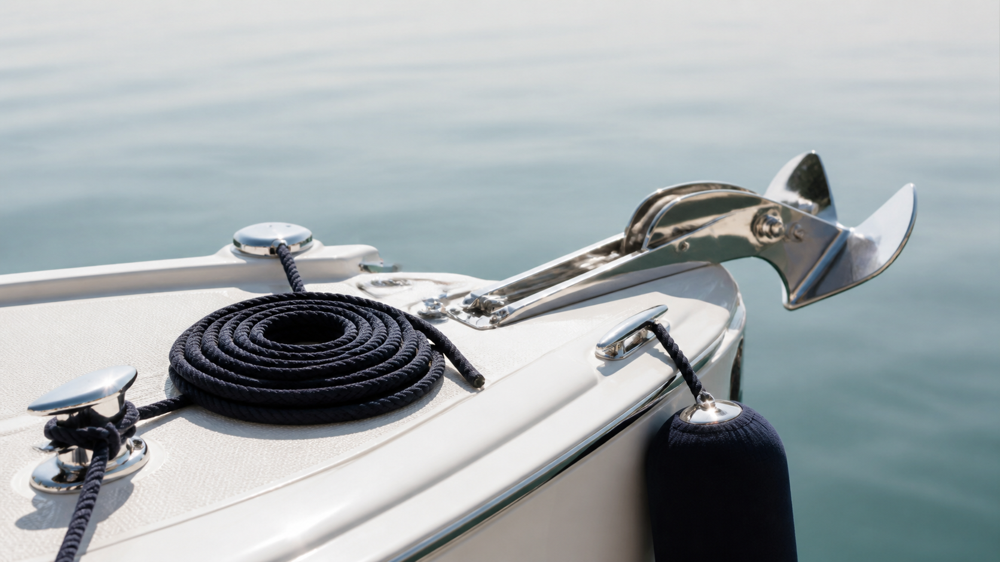
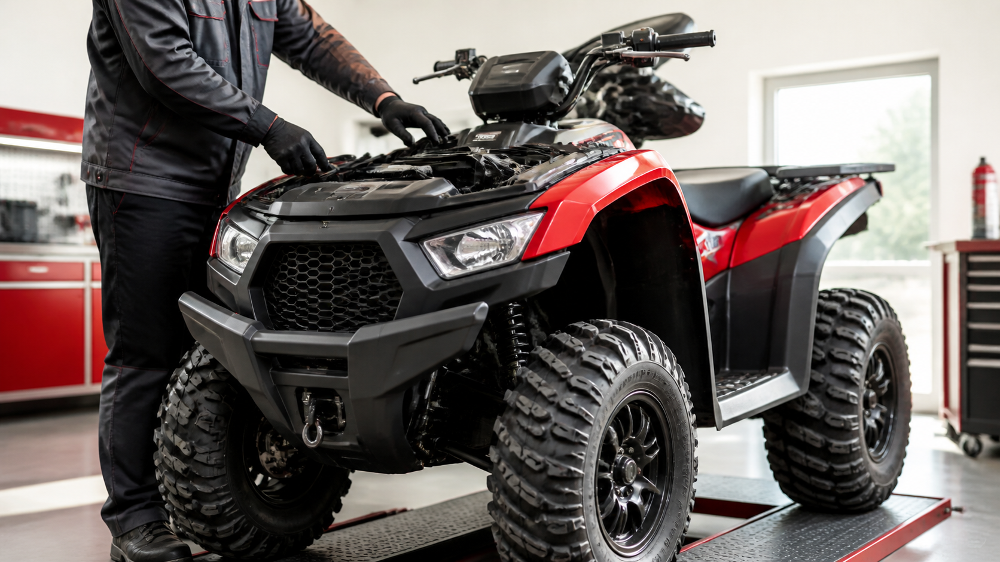
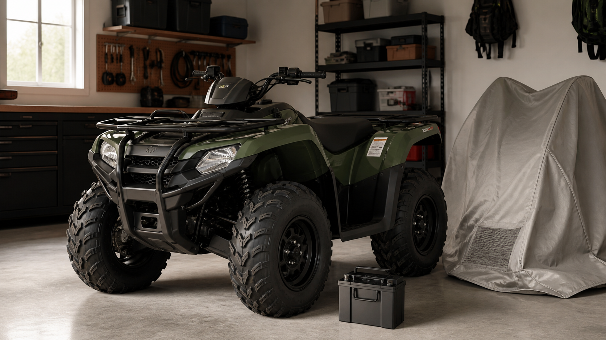
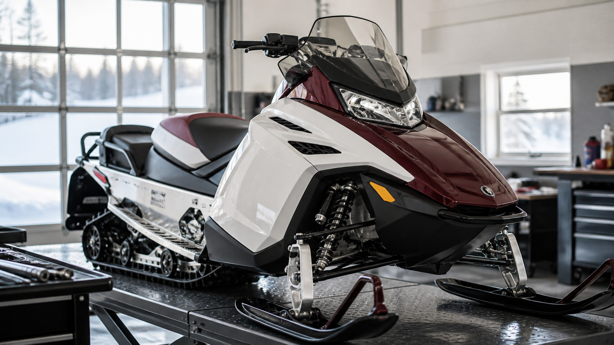
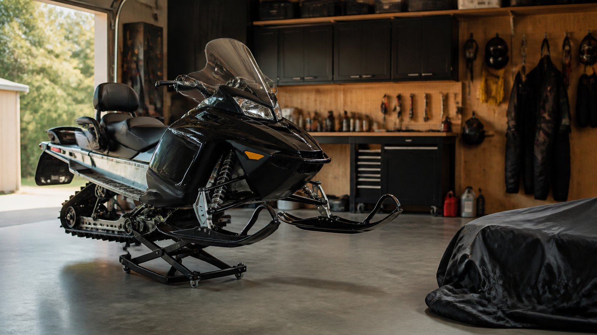
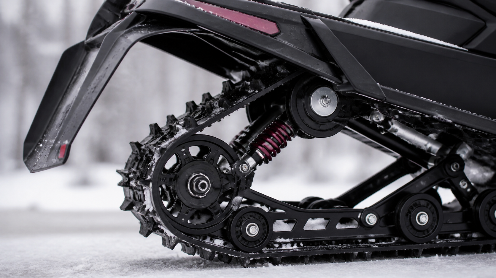
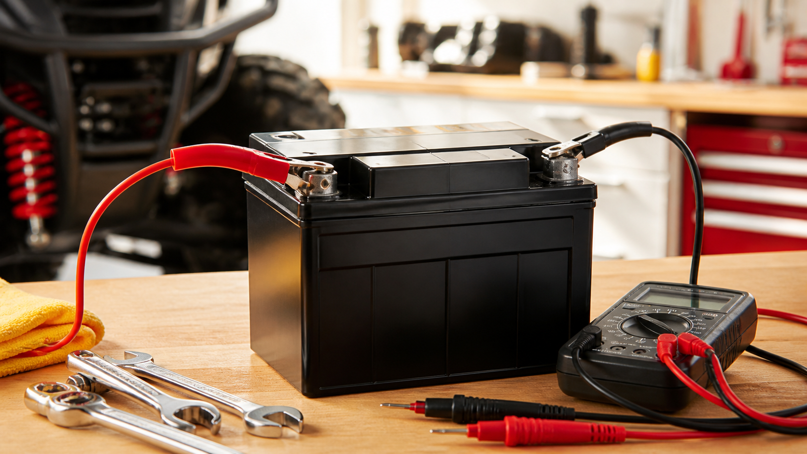

ЛОДКИ · 01
Весенняя подготовка лодки и прицепа
Корпус, крепёж, прицеп и безопасный первый спуск на воду.
БОРТОВОЙ ЖУРНАЛ
Подробные чек-листы и практические рекомендации по подготовке, эксплуатации и хранению лодок, квадроциклов и снегоходов.

Корпус, крепёж, прицеп и безопасный первый спуск на воду.

Топливо, охлаждение, редуктор и первый запуск после хранения.

Аккумулятор, навигационные огни и обязательное оснащение.

Корпус, мотор и место хранения без неприятных сюрпризов весной.

На что смотреть до первого выхода на воду.

Чек-лист для спокойной стоянки и безопасного подхода к берегу.

Тормоза, жидкости, ходовая и электрика.

Что сделать перед длительной паузой в эксплуатации.

Признаки износа ремня и базовая профилактика.

Узлы, которые нельзя оставлять без внимания.

Короткий план проверки до первого выезда.

Сухое хранение, топливо и защита от коррозии.

Как заметить износ до того, как он станет дорогим ремонтом.

Уход за батареей и проверка контактов перед сезоном.